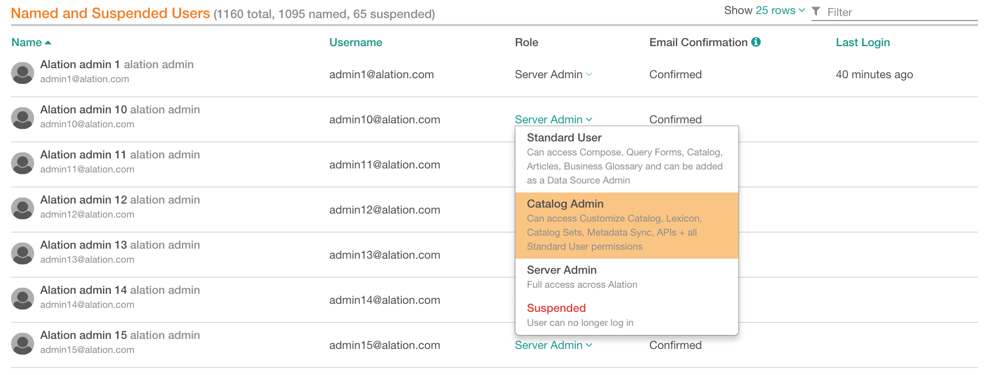

Managing Users - before V R7 (5.12.x)¶
Applies from V R3 (5.6.x) to V R6 (5.10.x)
User accounts in Alation can be managed by users with the Server Admin role. Alation provides capability for Server Admins to:
view all existing users
enable or disable new account moderation
confirm new user accounts
promote users to Admin level
assign roles
suspend users
These actions are available on the Users tab of the Admin Settings page.
Viewing User Accounts¶
To view the list of all user accounts,
In the Server Admin section of the Admin Settings page, click Users to open the Users tab.
{kind=link}
Find the table Named and Suspended Users it displays details of all user accounts created in your instance of Alation.
Sorting¶
You can sort the accounts by Name, Username or Last Login . To apply sorting, click the name of the column you want to sort by.
Filtering¶
You can search for specific users by filtering the data in the table. To filter,
Hover over the table area to reveal the filter to the right of the table title.
In the filter field, type the name or part of the name. The table will update to have filtered data.
Changing the Number of Displayed Rows¶
You can change the number of table rows displayed on one page by selecting a preferred value in the Show N rows dropdown next to the filter.
Named and Suspended Users:
{kind=link}
New Account Moderation¶
If necessary, you can enable Admin approval for new user sign-ups in the Account Policy section of the Users tab. If moderation of new sign-ups is enabled, each new user has to be approved by a Server Admin before they can log in. Server Admins will receive an email notification when a new user has requested an account with Alation and will proceed to confirm the new account.
To enable or disable sign-up moderation,
Sign in to Alation and in the upper-right corner of the application, click the Admin Settings icon. Admin Settings page will open.
In the Server Admin section, click Users.
In the Account Policy section, select to enable or clear to disable the Moderate user signups checkbox.
Pending Account Activation¶
To confirm new user accounts,
Sign in to Alation and in the upper-right corner of the application, click the Settings icon. Admin Settings page will open.
In the Server Admin section, click Users.
In the Pending Account Activation section, find the new sign-ups to be approved.
Click Activate as… to approve the new user and assign them a role in Alation or reject the new account by clicking Reject.
Approved users will be able to log in and start working in the scope of the role assigned to them.
Rejected users will not be able to sign in.
Pending Account Activation:
{kind=link}
Confirming Emails¶
All new approved users will be requested to verify the email address they provided at sign-up. Admins can monitor whether or not users have done so in the Email Confirmation column of the Named and Suspended Users table. Admins can bypass this requirement by manually confirming the user’s email address. To do so, click Confirm Email for a specific user.
Confirm Email:
{kind=link}
Promoting Users to Admin Level¶
On the Users tab, Server Admins can promote users to Server Admins or Catalog Admins by placing them into the corresponding built-in Group.
For Alation roles overview, refer to Roles Overview.
To assign either the Server Admins or Catalog Admins role to a user,
In the Roles and Groups section of the Users tab, click either Server Admins or Catalog Admins link. The corresponding Group page will open.
Hover over the title Members to reveal the Add icon and click it to open the Search Users dialog. Find and add the user to the Group. The added user will be automatically assigned the role of either the Server Admin or the Catalog Admin - depending on which group you have opened.
Assigning Server Admin Role using Server Admin Group:
{kind=link}
Assigning Roles¶
Server Admins can assign roles to users in the Named and Suspended Users table on the Users tab. To assign a role,
Hover over the Named and Suspended Users section to reveal the Filter on the right. Use the Filter to find the user account to be updated.
From the Role column, assign a role to the user by selecting a new value from the dropdown list.
Note
Users with the Server Admin or Catalog Admin roles will be automatically placed into one of the built-in Groups: Server Admins or Catalog Admins.
Assigning Roles:
{kind=link}
Suspending Users¶
Note that there is no ability to delete a user from Alation. Instead, a user must be suspended .
To suspend a user, assign the Suspended role to them. Suspended users will not be able to log in to Alation.
The Alation objects that a suspended user created or contributed to will remain in Alation and can be managed by Server Admins. The suspended user will be marked as Inactive in their Profile and GONE if their name is used in any of the fields.
Profile of a Suspended User:
{kind=link}
Suspended User in Edited By Field of an Article Object:
{kind=link}